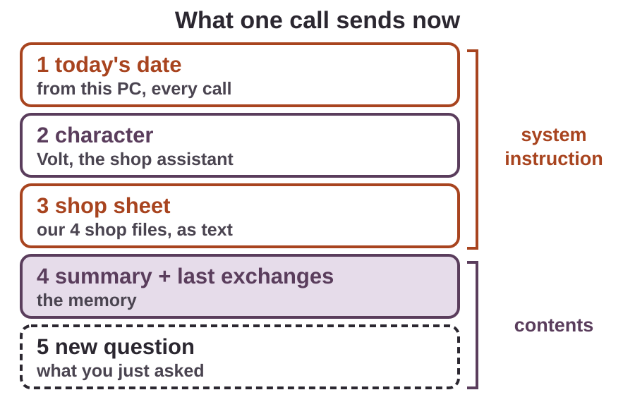
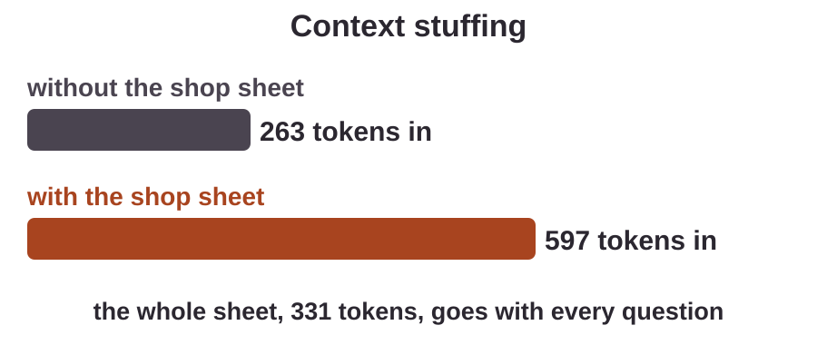

Prefer to watch? This chapter goes with Episode 6 (6:49). Open it on YouTube.
.venv. Antigravity, signed in: install Antigravity on Windows. And your own Gemini key in .env..env with GEMINI_API_KEY; the README shows the setup.It cannot tell the date
Chapter 5 turned our bot into Volt, the assistant of a small electronics shop. Two questions show what it still lacks.
Ask What is today's date? and Volt says it can only help with questions about Volt Electronics. A model has no clock; nothing in the call tells it the day. Ask How much is the 20W charger? and it says it is not certain of the price and will check with the shop. That is the right answer for now, because it has never seen our price list. It is also not much use to a customer.

A file in AI Studio
Google AI Studio shows the idea first. With Gemini 3.1 Flash Lite, attach the price list, products.pdf, with + › Upload files, and ask the same question. AI Studio counts the file as 561 tokens, and the answer is exact: the 20W USB-C charger costs 899 rupees.
Putting a whole file into the prompt like this has a name: context stuffing. The model does not remember the file; the file's text simply travels with the question. AI Studio does that for us inside one chat. Our window has to turn our files into text itself, and that is what we build here.
What one call sends
After this chapter, every call to Gemini carries five things, top to bottom. The first three go together as the system instruction; the memory and your question go in the contents, as before.

The date prompt
The date first, because it is the smaller job. Make a new file, prompts/06-date.txt.
Task : Tell the bot today's date and time with every question Context : - Use the virtual environment .venv in this folder. Don't create a new one. - Today the bot does not know what day it is, so it cannot answer "What is today's date?". - With every call, add one line before the system prompt: Today is <weekday, day month year>, <time>. - Take the date and time from this computer at the moment of the call, not when the program starts. - Send it together with the system prompt as the system instruction of the call, not as a chat message. - Add Settings > Today's date: a tick I can select or unselect. It starts selected. - When it is unselected, send no date line, as before. - The grey status line also shows it, for example: Date: on. - Count its tokens in the tokens in, as before. - Keep the character, the memory, the settings and everything else as it is. - Keep ask() working for the terminal chat. Folder arch : - ui.py : the window (frontend) - bot.py : the chatbot (backend), now adding today's date - prompts/ : our prompts - prompts/system/ : the system prompts
The clock is read at the moment of each call, so a window left open overnight still knows the new day.
Review and implement prompts/06-date.txt
When it is done, the agent has changed 3 files. Click Accept all.
Today's date, live
python ui.py
The grey line under the menu bar now ends with Date: on. Ask What is today's date? and the answer on our recording day was "Today is Friday, 20 November 2026." The grey line under it shows 263 in: the question, Volt's character and the date line.
Our shop in four files
A real shop keeps its facts in whatever files it already has. Ours has four, in prompts/shop/, each in a different format on purpose:
products.pdf: products and prices, in rupees, tax included. The 20W USB-C charger is 899; a 1 m USB-C cable 299; a 2 m cable 449; wireless earbuds 2,499; a 10,000 mAh power bank 1,799, out of stock until next week; a phone stand 349.offers.html: this week's offers, a small web page. The 20W charger and a 1 m cable together for 1,099; a second pair of earbuds at 10% off.faq.md: questions we hear often, in Markdown: where the shop is, delivery, paying by UPI.returns.txt: the returns policy, as plain text.
The model reads text, so before anything reaches Gemini, each file has to become plain text: the PDF's words, the web page without its tags, the Markdown and the text as they are. Download the four files above into your own prompts/shop/ folder to build along.
The shop prompt
The second prompt asks for a small preprocessor, shop.py, and sends its result with every call. Make a new file, prompts/06-shop.txt.
Task : Teach the bot about our own shop from the files in prompts/shop/ (context stuffing: the whole shop sheet goes into every call) Context : - Use the virtual environment .venv in this folder. Don't create a new one. - Today the bot knows nothing about our shop, so it says it will check when I ask a price. - prompts/shop/ holds our shop files: products.pdf, offers.html, faq.md and returns.txt. - Write a small preprocessor in a new file, shop.py: it reads every file in prompts/shop/ and turns each one into plain text. - PDF: take the text of every page. HTML: take the visible text, without tags. .md and .txt: take the text as it is. - Use pypdf for PDF and beautifulsoup4 for HTML; install them in .venv and add them to requirements.txt. - Put the texts together into one shop sheet, each part starting with its file name. - Send the shop sheet with every call, after the date line and the system prompt, as part of the system instruction. - Volt answers prices and products only from the shop sheet; for anything not in it, it says it will check with the shop. - Read the files again when I choose Settings > Reload shop files, so I can change a file without restarting. - Add Settings > Shop files: a tick I can select or unselect. It starts selected. Unselected, send no shop sheet. - Add Settings > Show shop sheet: a small window with the text the bot receives. - The grey status line also shows it, for example: Shop: 4 files, 410 tokens. - Count its tokens in the tokens in, as before. - Keep the date, the character, the memory, the settings and everything else as it is. Folder arch : - ui.py : the window (frontend) - bot.py : the chatbot (backend), now with the shop sheet - shop.py : reads the shop files into plain text - prompts/ : our prompts - prompts/system/ : the system prompts - prompts/shop/ : our shop files
"Only from the shop sheet" is the line that stops invented prices: for anything not on the sheet, Volt says it will check with the shop.
Review and implement prompts/06-shop.txt
The agent installs pypdf and beautifulsoup4 in .venv, writes shop.py and has changed 5 files in all. Click Accept all.
The shop sheet, live
Run python ui.py again and maximise the window, so the grey line fits: it ends with Shop: 4 files, 331 tokens. Now ask:
| Question | Volt's answer | Tokens in |
|---|---|---|
| How much is the 20W charger? | 899 rupees, or bundled with a 1 m USB-C cable for 1,099 this week; both in stock | 597 |
| Do you have a power bank? | A 10,000 mAh power bank, out of stock and expected back next week | 661 |
| How much is a smart watch? | Not certain the shop carries smart watches; it will check with the shop | 705 |
The first two come straight from our files, the offer included. The smart watch is not on the sheet, so Volt does not invent a price. Tokens in climb a little with each question, because the conversation (the memory) grows as well.
What context stuffing costs
| Call | Tokens in | What went with it |
|---|---|---|
| What is today's date? | 263 | Date line, character, memory, question |
| How much is the 20W charger? | 597 | The same, plus the shop sheet (331 tokens) |
| The charger with a cable, after the edit | 756 | The sheet again, plus a longer conversation |
The sheet rides along with every question, even one about the weather.

- Good for: a handful of small files. Simple to build, nothing can be missed.
- Breaks when: the files grow. A thousand-product catalogue would travel in full with a question about one cable, in tokens and in waiting time.
- Later in the series: sending only the parts a question needs.
Change a price
Because the sheet is just files, you can change it. Open prompts/shop/offers.html and change the bundle from 1,099 to 999 rupees, and save. Then Settings › Reload shop files, with no restart, and ask How much is the charger with a cable this week? Volt answers that the 20W charger and the 1 m cable are available together for 999 rupees. The grey line under it says 756 in.
Settings › Show shop sheet opens the plain text Volt receives with every question, all four files one after another, each starting with its file name. Reading it is the quickest way to see why Volt answered what it did.
Our project so far
Two parts are new in this chapter, in orange below:
- The date line, read from this PC's clock when a call is made.
shop.py, which readsprompts/shop/(PDF, HTML, Markdown, text) into one shop sheet forbot.py.

Quick reference
Every command and menu from this chapter. The prompts are above.
| Command or menu | What it does | Use it when |
|---|---|---|
Review and implement prompts/06-date.txt | Adds today's date to every call | After writing the first prompt |
Review and implement prompts/06-shop.txt | Adds shop.py and the shop sheet | After the second prompt |
python ui.py | Opens the window | To ask about the shop |
| Settings › Today's date | Sends the date line, or not | To compare with and without |
| Settings › Shop files | Sends the shop sheet, or not | To see the token cost |
| Settings › Reload shop files | Reads the files again | After you change a file |
| Settings › Show shop sheet | Shows the text Volt receives | To check what Volt knows |
The takeaway
- A model knows nothing you do not send: today's date and your own prices have to travel with the call.
- Context stuffing means sending the whole shop sheet with every question, as text the model can read, whatever the original format.
- It costs tokens on every call, so it suits small files; larger ones need sending only the parts a question needs.
Your own shop's files
The goal: see Volt answer from files you wrote, and refuse to guess beyond them.
The steps: run both prompts through the agent in your own copy of the project. Put your own shop's files in prompts/shop/ in place of ours: a price list, an offer, a few common questions. Choose Settings › Reload shop files, then ask about one product that is in your files and one that is not.
Guess first: will it invent a price for the missing one?
One question for you: which file would you give your own bot first?
Next: the price as a number
The question: a 20W charger and two 1 m cables, together. Volt's answer is correct, 999 for the bundle plus 299 for the second cable, 1,298 rupees.
The trouble is where that 1,298 lives: in the middle of a sentence written for a person. Code that wants to
- show a running total in the window, or
- compare Volt's price with the price list
has no dependable way to find the number. Chapter 7: Volt replies in a fixed shape, the product and its price as a plain number, that code can read directly.
References
Where each number on this page comes from. Everything was also checked in our own recording on 20 Nov 2026.
- Google · Text generation: system instructions A system instruction steers the model for the whole request, separate from the conversation. https://ai.google.dev/gemini-api/docs/text-generation
- Google · Google AI Studio Attaching a file to a prompt and its token count. https://aistudio.google.com
- pypdf · Extract text from a PDF The library shop.py uses for the PDF. https://pypdf.readthedocs.io/en/stable/user/extract-text.html
- Beautiful Soup · Documentation The library shop.py uses to take the visible text of the web page. https://www.crummy.com/software/BeautifulSoup/bs4/doc/
- Learn AI by Building · chatbot-from-scratch on GitHub This chapter's finished code and prompts. https://github.com/Aditya-402/chatbot-from-scratch
- My own recording · 20 Nov 2026, Windows 11 Every answer and token count on this page is from those takes, on Gemini 3.1 Flash Lite.
New chapters and episodes come out every week. Follow along on YouTube or the WhatsApp channel. Questions? Ask under the video on YouTube; I read every comment.